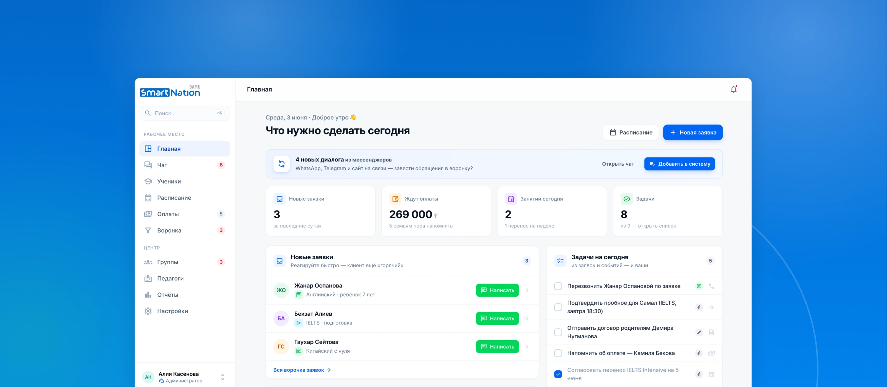
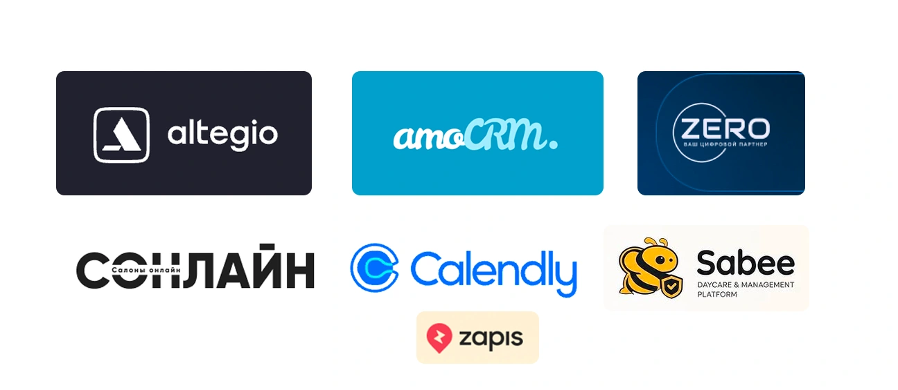
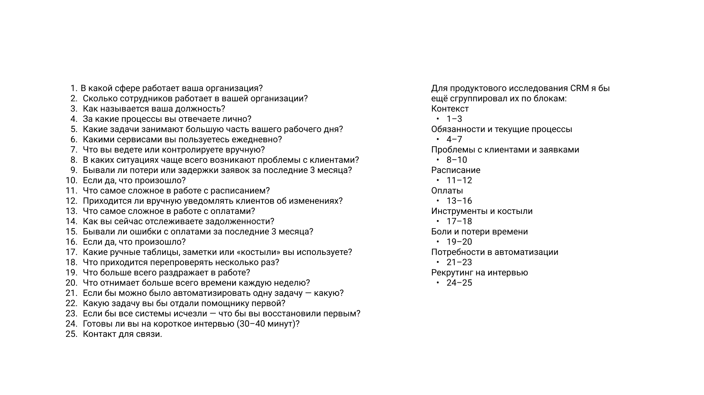
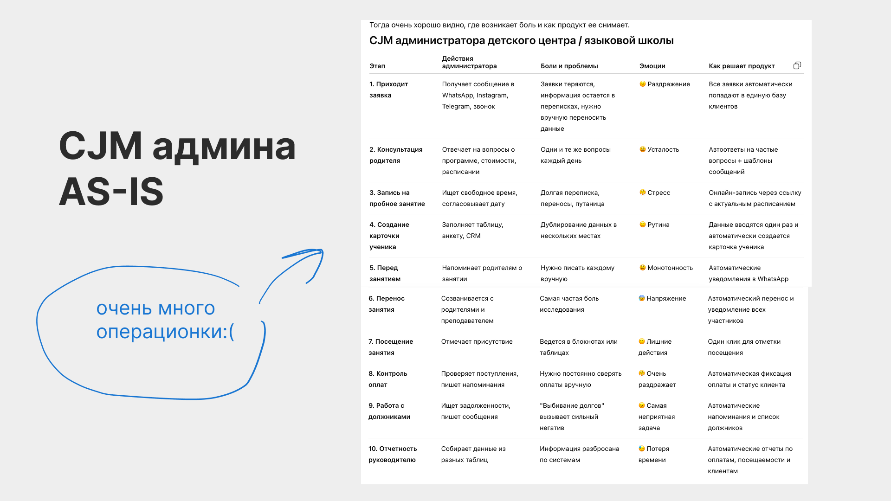
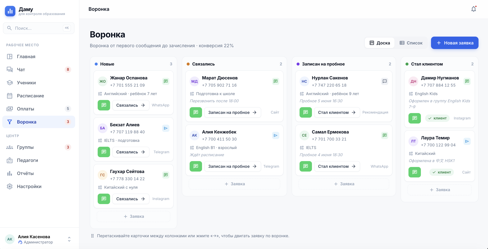
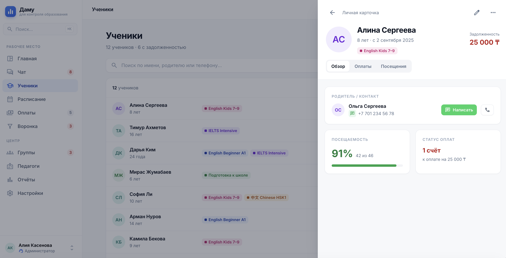
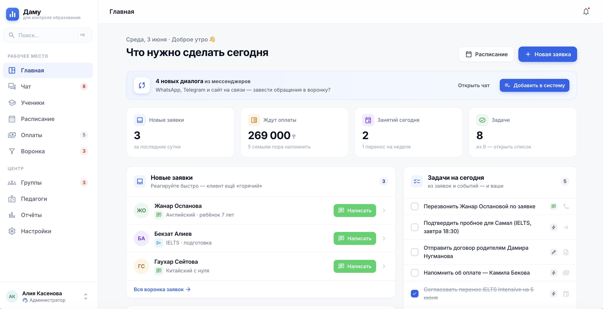
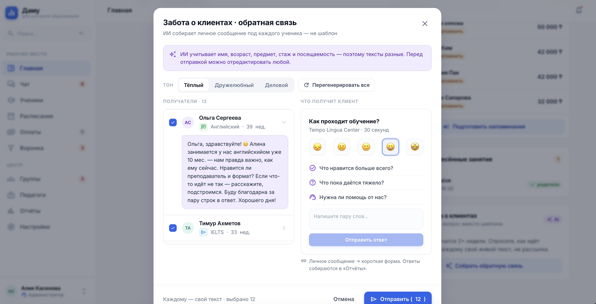

Damu — от рисёрча до прототипа CRM для детских центров
Провела product discovery для платформы автоматизации детских и образовательных центров — опрос, интервью, JTBD, CJM — и на его основе спроектировала hi-fi прототип CRM. Главная находка рисёрча — смена позиционирования: пользователи не ищут CRM, они ищут «администратора на автопилоте».

Гипотеза, с которой стартовали:
«Админам центров приходится работать в нескольких приложениях, чтобы вести базовый учёт — заявки, расписание, оплаты, должники, отчётность. И это создаёт хаос»
Звучит очевидно? Именно поэтому её нужно было валидировать, а не принимать на веру. Damu — платформа для управления образовательным бизнесом: центры, языковые школы, частная практика. Роли, которые изучала, — администратор и владелец бизнеса.
Сначала посмотрела, кто уже решает эту проблему
Прошлась по рынку: Altegio, amoCRM, zapis.kz, Calendly, Sonline — плюс прямые конкуренты в образовании, Zero и Sabee. У двух последних разобрала лендинги: что обещают, какими словами продают, на какие боли давят.
Это дало две вещи: понимание, что ниша живая (конкуренты активно льют рекламу — собрала подборку их таргета), и базу для сравнения, когда появятся ответы респондентов.

Опрос строила так, чтобы не получить вежливый small talk
90% интервью бесполезны по одной причине: продакт приходит не исследовать, а подтверждать свои идеи. Поэтому перед составлением вопросов зафиксировала правила:
Собрала опрос из 25 вопросов в восемь смысловых блоков, в конце — рекрутинг на глубинное интервью:

Шесть ролей — от частной практики до люкс-сегмента
Плюс респонденты из смежных сфер с административными процессами — везде, где человек строит образовательный процесс сам или с командой.
Хаос подтвердился — но звучит он иначе
Гипотеза подтвердилась: большинство собирает рабочий процесс из разрозненных инструментов. Типичный стек:
CRM — редкость даже у крупных игроков. Главный инсайт: ради одной задачи администратор переключается между мессенджером, таблицей, календарём и заметками. Отсюда дублирование данных, ручной ввод, забытые задачи и ошибки.
«Ведение разных баз данных, в которых информация дублируется».
Четыре главные боли
Расписание и переносы. Упоминалось чаще всего. Переносы в последний момент, ручное обновление, отсутствие уведомлений → потеря времени, путаница у клиентов, риск пропуска занятий.
Оплаты и задолженности. Вручную отслеживать, вручную напоминать. «Выбивание долгов» — самая эмоционально негативная часть работы.
Ручные уведомления. Практически все пишут клиентам в WhatsApp/Telegram руками: переносы, оплаты, напоминания.
Потеря времени на коммуникацию. Ответы на повторяющиеся вопросы и первичная обработка заявок. Нюанс: люди не хотят общаться меньше — они хотят избавиться от однотипных сообщений.
Отдельный сигнал: респонденты по несколько раз перепроверяют оплаты, расписание и записи. Если процесс постоянно перепроверяют — пользователь не доверяет своей системе учёта.
Из болей — в JTBD
Чтобы боли стали рабочим материалом для продукта, переформулировала их в пять джобов. Примеры:
«Когда приближается дата оплаты, я хочу, чтобы система сама напомнила клиенту, — чтобы мне не приходилось писать каждому вручную».
«Когда клиент переносит занятие, я хочу быстро найти новое время и уведомить всех участников, — чтобы избежать путаницы».
Плюс собрала CJM администратора AS-IS на 10 этапов — от заявки до отчётности руководителю. На каждом шаге: действия, боли, эмоции и то, как продукт эту боль снимает.
Картина получилась показательная: почти весь день админа — операционка.

Пользователи не ищут CRM
Проблема та же, но формулировка у пользователей звучит не как «мне нужна CRM», а как:
«Я устал вручную вести записи, оплаты, расписание и постоянно писать клиентам»
Это меняет позиционирование. Продавать нужно не CRM (слово, которое для аудитории либо пустое, либо пугающее), а систему, которая экономит 5–10 часов в неделю и сама напоминает клиентам про занятия и оплату.
Что изменилось после исследования
Веса болей в новой структуре лендинга
Прототип Damu: каждая фича закрывает конкретную боль
На основе исследования спроектировала hi-fi прототип CRM для администраторов. Структура повторяет цепочку MVP: Dashboard → Заявки → Ученики → Расписание → Оплаты.
Ничего не остаётся «в чатах»
Все обращения из WhatsApp, Telegram и других каналов попадают в простую воронку: новая → связались → записан на пробное → стал клиентом.

Информация вводится один раз
Контакты, история оплат и посещений в одном месте. Прямой ответ на главный инсайт о переключении между четырьмя инструментами ради одной задачи.

Рутина закрывается за несколько минут
Новые заявки, неоплаченные счета, ближайшие и перенесённые занятия — на одном экране. Задачи подтягиваются автоматически из мессенджеров, плюс админ может добавлять свои вручную.

Продукт помогает админу оставаться человеком
Сознательно отказалась от полной авторассылки: респонденты — небольшие центры с личными отношениями с родителями, автоматическое сообщение о долге может прозвучать нетактично. Система готовит и подсвечивает напоминания об оплате, но отправка — после подтверждения админа. Слово «просрочка» заменила на мягкое «напоминание об оплате».
Паттерн Google Calendar, а не изобретение нового
Первую версию забраковала сама: клик по слоту сразу создавал перенос и ломал ожидания. Переделала по паттерну Google Calendar / Zoom — клик создаёт занятие, редактирование отдельной кнопкой. После переноса родители получают уведомление автоматически. Доработала виды: день / неделя / группы.
Группы и персонализированный NPS
Управление группами с маркерами заполняемости (норма 7–8 человек, недобор подсвечивается «нужна дозапись»), статусом «стартовала / набрана, но не стартовала» и датой старта. Плюс персонализированный NPS: вместо шаблонной рассылки AI формирует живое сообщение («Прошла пара недель — как успехи? Есть что-то, что не получается?») с формой обратной связи.

Прототип собран в воздушной, минималистичной стилистике Linear / Notion — минимум плотных таблиц, потому что аудитория — люди без технического опыта, уставшие как раз от Excel.
Самая ценная находка исследования — не список фич, а слова пользователей. Гипотеза о хаосе подтвердилась, но продукт, который собирались строить «как CRM», люди описывали совсем другим языком. Рисёрч на 6 респондентах изменил позиционирование, структуру лендинга и приоритеты MVP — до того, как на «не те» акценты ушли бы месяцы разработки и маркетинговый бюджет.